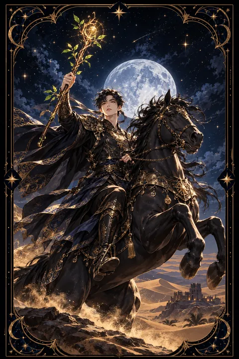

이 게시물은 쿠팡 파트너스 활동의 일환으로, 이에 따른 일정액의 수수료를 제공받습니다.


완드 기사 카드 — 불꽃처럼 내달리는 행동력
완드 기사 카드 한눈에 보기
완드 기사 카드 상징 읽기

동네보살의 카드 그림은 전통 라이더–웨이트 덱의 뜻을 새 그림으로 옮긴 것입니다. 아래 상징 설명은 전통 덱의 그림을 기준으로 합니다.
완드 기사는 갑옷 위에 도롱뇽 무늬가 새겨진 노란 겉옷을 입고 앞발을 높이 치켜든 말 위에 앉아 있습니다. 앞발을 든 말은 억누를 수 없는 에너지와 곧 뛰쳐나갈 듯한 기세를 상징합니다.
투구 끝에서 불꽃처럼 휘날리는 붉은 깃털과 겉옷의 도롱뇽 문양은 모두 불의 원소를 나타냅니다. 열정과 용기, 그리고 쉽게 꺼지지 않는 의지가 이 인물의 본질입니다. 손에 쥔 지팡이에 돋은 초록 싹은 그 열정이 새로운 성장을 향하고 있음을 보여 줍니다.
멀리 보이는 사막과 피라미드는 낯선 땅으로 떠나는 모험과 이동을 뜻합니다. 다만 도롱뇽 무늬 가운데 일부는 꼬리를 물지 못한 채 끊겨 있어 시작한 일을 끝까지 마무리하지 못할 수 있다는 경고로 읽히기도 합니다. 기사는 시종보다 한 걸음 성장한 단계로 배운 것을 직접 행동으로 옮기는 사람을 상징합니다.
완드 기사 카드 정방향 뜻
정방향 완드 기사는 뜨거운 열정과 강한 추진력으로 목표를 향해 달려갈 때가 왔음을 알립니다. 오래 망설였던 일이 있다면 지금이 행동에 옮길 때이며 그 결단력이 주변 사람에게도 활력을 불어넣습니다.
이 카드는 이동과 모험의 기운이 강합니다. 여행, 이사, 이직, 새로운 도전처럼 익숙한 자리를 떠나 낯선 곳으로 향하는 일에 좋은 흐름이 실립니다. 자신감 있게 앞장서는 태도가 기회를 끌어당깁니다.
다만 기사의 열정은 빠른 만큼 식기도 쉽습니다. 출발의 기세가 뜨거울 때 목적지와 마무리 날짜를 함께 정해 두면 추진력이 끝까지 이어집니다. 달리는 중간에도 한 번씩 방향을 점검하는 여유를 가지면 이 카드의 힘을 가장 잘 쓸 수 있습니다. 새로운 곳에서 만나는 사람과 경험이 다음 단계로 가는 발판이 되어 줄 것입니다.
완드 기사 카드 역방향 뜻
역방향 완드 기사는 열정이 방향을 잃고 날뛰는 상태를 보여 줍니다. 충동적으로 결정하거나 준비 없이 뛰어들었다가 수습하느라 시간을 허비할 수 있습니다. 화를 참지 못해 관계에 금이 가거나 사소한 일로 다툼이 생기기도 쉽습니다.
계획했던 여행이나 이동이 지연되거나 틀어지는 일도 이 카드와 관련이 깊습니다. 여러 일을 동시에 벌였다가 어느 것도 끝내지 못해 스스로 지치는 경우도 있습니다.
하지만 열정을 꺼 버리라는 경고로 받아들일 필요는 없습니다. 불길을 다스리는 법을 익히라는 조언입니다. 중요한 결정은 하루쯤 시간을 두고 내리고 감정이 격해질 때는 잠시 자리를 떠나 숨을 고르세요. 한 번에 한 가지 목표만 향해 달리기로 정하면 흩어졌던 에너지가 다시 힘을 발휘합니다.
연애에서 완드 기사 카드
솔로라면 열정적이고 매력적인 사람이 빠르게 다가올 수 있는 시기입니다. 첫 만남부터 강하게 끌리고 짧은 시간 안에 관계가 진전되기 쉽습니다. 마음이 움직인다면 주저하지 말고 적극적으로 표현해 보세요.
만나는 사람이 있다면 관계에 뜨거운 활력이 도는 때입니다. 함께 여행을 떠나거나 새로운 활동에 도전하면 서로를 향한 설렘이 다시 살아납니다. 즉흥적인 데이트도 좋은 추억이 됩니다.
다만 완드 기사의 사랑은 빨리 타오르는 만큼 빨리 식을 수 있습니다. 상대의 열정이 행동으로 꾸준히 이어지는지 지켜보고 스스로도 순간의 감정에 휩쓸려 중요한 약속을 쉽게 하지 않는 편이 좋습니다. 속도보다 방향을 함께 맞추는 대화가 관계를 오래 지켜 줍니다. 불꽃같은 끌림을 오래가는 온기로 바꾸려면 작은 약속부터 지켜 나가는 모습이 필요합니다.
재회·속마음 질문에서 완드 기사 카드
재회를 궁금해하는 사람에게 완드 기사는 멈춰 있던 관계가 갑자기 속도를 낼 수 있다는 소식을 전합니다. 상대가 불쑥 연락해 오거나 뜻밖의 장소에서 마주칠 가능성도 있습니다. 그러나 반가운 마음에 곧장 예전 관계로 돌아갔다가 같은 문제가 되풀이되면 관계는 금세 흔들립니다. 다가오는 열기에 휩쓸리기보다 이번에는 무엇이 달라졌는지 차분히 확인해 보세요. 만남의 속도를 한 박자 늦추는 것만으로도 결과가 달라질 수 있습니다. 기사가 뒤집혀 나왔다면 상대의 마음이 오락가락하거나 말과 행동이 다를 수 있으니 서두르지 말고 시간을 두고 지켜보는 편이 좋습니다.
일·금전에서 완드 기사 카드
일에서는 추진력이 필요한 프로젝트나 새로운 도전에서 두각을 나타내기 좋은 시기입니다. 출장, 외근, 부서 이동, 이직처럼 환경이 바뀌는 일에도 순조로운 흐름이 따릅니다. 앞장서서 일을 밀고 가는 태도가 좋은 평가를 받습니다.
주머니 사정으로 보면 발 빠르게 움직인 만큼 새로운 수입 기회가 생길 수 있습니다. 다만 기분에 따라 지출이 커지기 쉬우니 큰 결제는 하루쯤 두고 판단하세요. 의욕이 앞서 동료와 속도 차이로 부딪칠 수 있으므로 중요한 결정 전에는 주변 의견을 한 번 더 듣는 것이 도움이 됩니다. 추진력에 꼼꼼한 확인이 더해지면 성과가 오래 남습니다. 한 번에 여러 프로젝트를 맡기보다 가장 중요한 하나에 먼저 불을 붙이세요.
완드 기사 카드는 예일까 아니오일까
망설임 없이 행동에 옮기면 빠르게 결과가 나온다는 카드라서 긍정의 답으로 봅니다. 역방향으로 나오면 서두르다 일을 그르칠 수 있다는 경고가 붙어 계획을 점검한 뒤 움직여야 하는 조건부 답이 됩니다.
자주 묻는 질문
완드 기사 카드 역방향은 나쁜 뜻인가요?
역방향 완드 기사는 열정이 방향을 잃고 날뛰는 상태를 보여 줍니다. 충동적으로 결정하거나 준비 없이 뛰어들었다가 수습하느라 시간을 허비할 수 있습니다. 화를 참지 못해 관계에 금이 가거나 사소한 일로 다툼이 생기기도 쉽습니다.
완드 기사 카드가 연애 질문에 나오면요?
솔로라면 열정적이고 매력적인 사람이 빠르게 다가올 수 있는 시기입니다. 첫 만남부터 강하게 끌리고 짧은 시간 안에 관계가 진전되기 쉽습니다. 마음이 움직인다면 주저하지 말고 적극적으로 표현해 보세요.
타로 카드는 어떻게 뽑나요?
타로 카드 페이지에서 78장을 섞으면 그중 22장이 펼쳐집니다. 마음이 가는 세 장을 고르면 과거·현재·미래 자리에 놓이고, 한 장씩 뒤집어 자리와 방향에 맞는 풀이를 읽습니다. 정방향과 역방향은 섞는 순간 정해집니다.